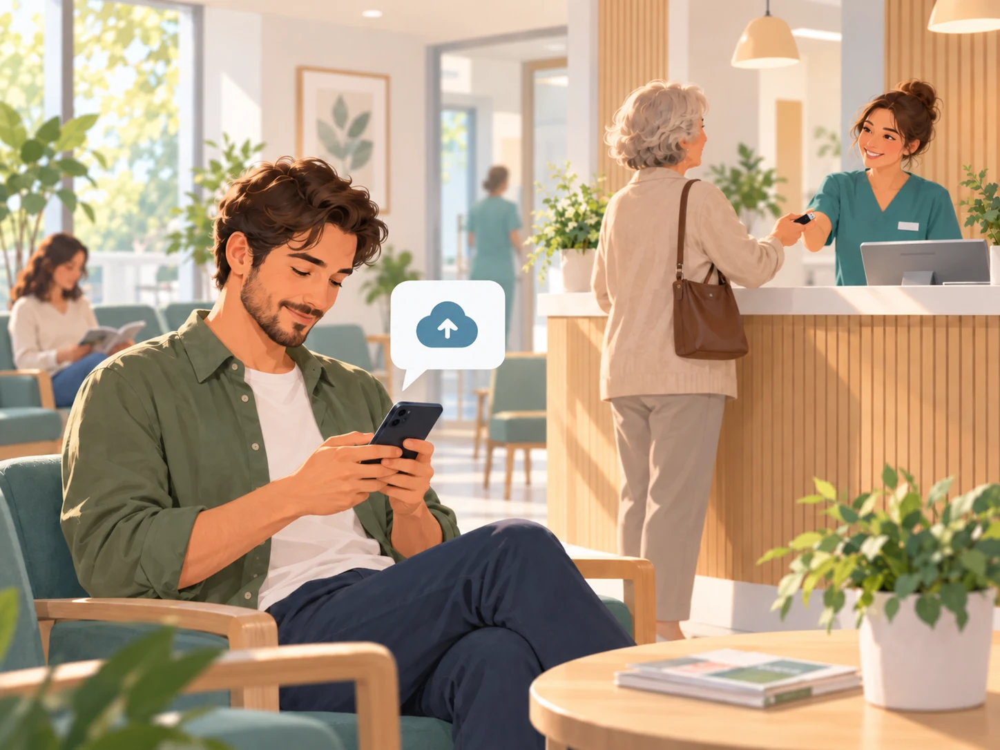
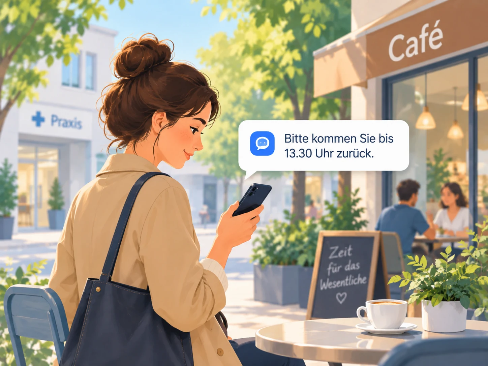
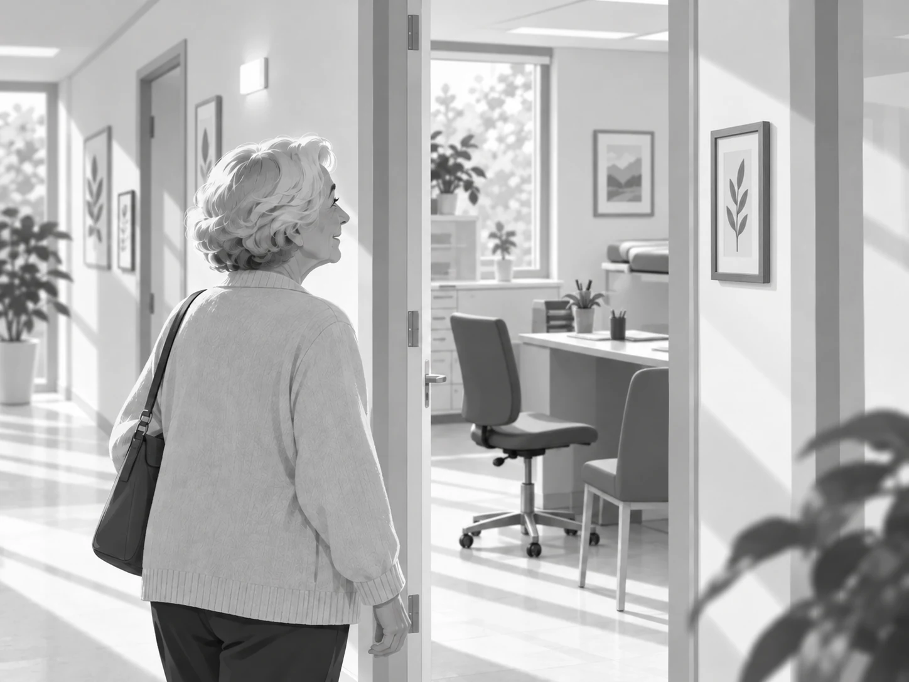
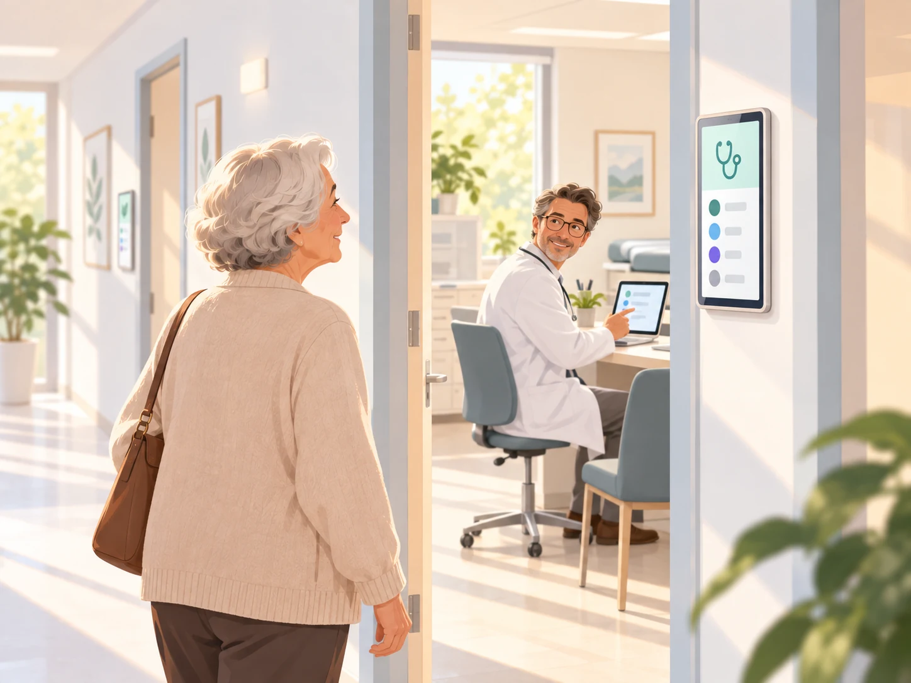
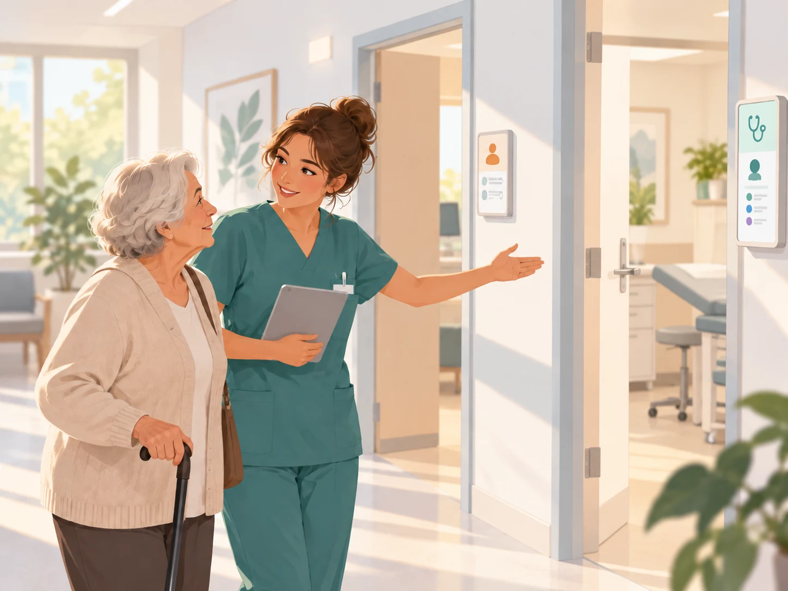
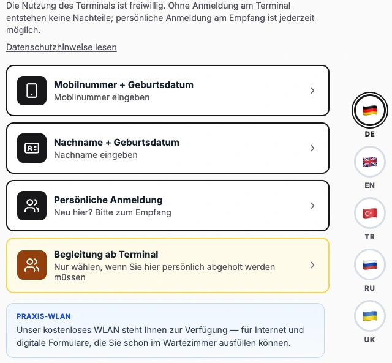
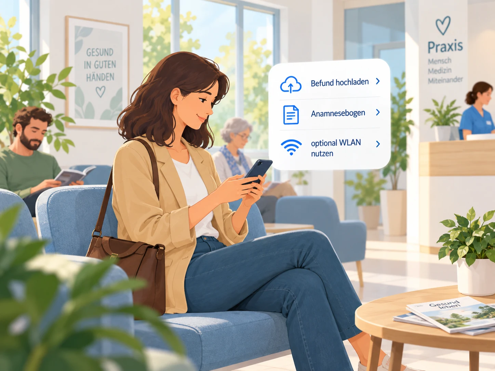
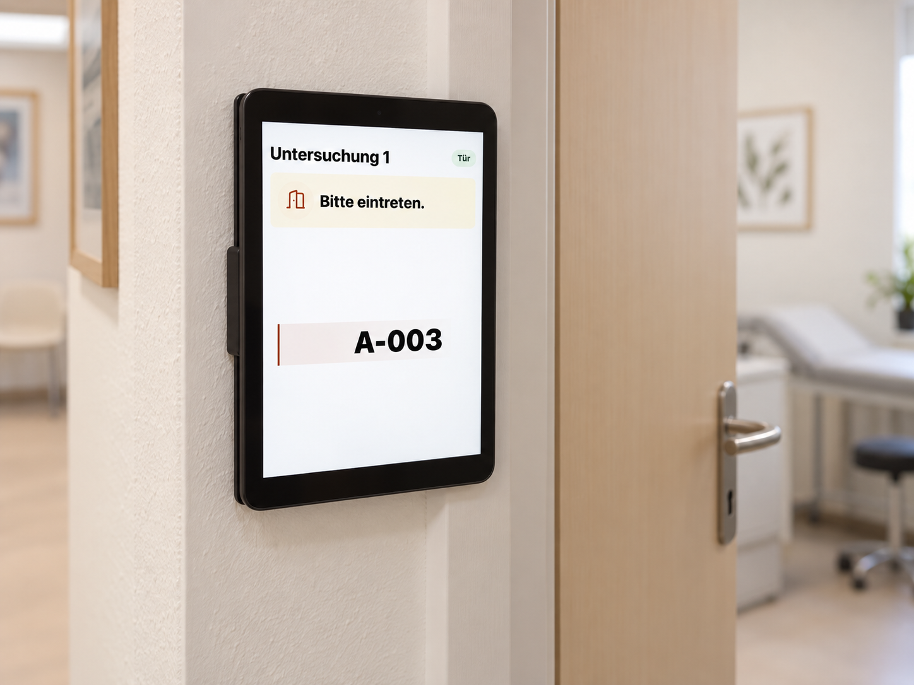
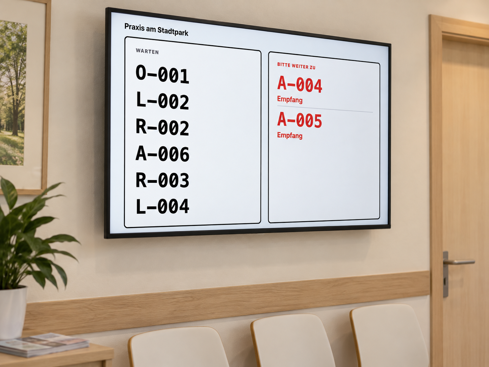

Mehr Ruhe.
Für Ihr Team,
für Ihre Patienten.
Wenn Anmeldung, Unterlagen und Rückfragen gleichzeitig ankommen: Wartezimmer hilft Ihrem Team, den Überblick zu behalten, und zeigt Patienten ihren nächsten Schritt.
Ihr Praxisalltag
Was würde Ihren Alltag
leichter machen?
Beginnen Sie dort, wo Sie Entlastung brauchen.

Weniger Andrang am Empfang.
Anmelden am Terminal oder bei der MFA – so, wie es zu Ihren Patienten passt.
Anmeldung ansehenDen Überblick im Team teilen.
Wer wartet wo? Wer ist in welchem Raum.
Praxisübersicht ansehen
Weniger Papier am Tresen.
Unterlagen digital annehmen und direkt dem richtigen Besuch zuordnen.
Unterlagen ansehen
Kurz raus, Rechtzeitig zurück.
Abwesenheiten im Blick behalten und Patienten bei Bedarf zurückholen.
Wartezeit ansehen

Wissen, wohin es geht.
Aufruf und Raumanzeigen machen den nächsten Schritt verständlich.
Aufruf ansehen
Passende Wege für jedes Anliegen.
Ihr Team steuert den Besuch – auch über mehrere Stationen und mit Begleitung.
Patientenwege ansehenSo läuft ein Praxisbesuch
Vom Ankommen
bis zum Aufruf.
Für Patienten ein klarer Weg.
Für Ihr Team die Übersicht dazu.

Ankommen
In Ruhe ankommen.
- Für Patienten
- Sprache wählen und selbst anmelden – oder persönlich zur MFA gehen. Wer Begleitung benötigt, kann sie am Terminal anfordern.
- Für Ihr Team
- Ihre Praxis bestimmt die Anmeldemethoden. Beide Wege führen in dieselbe Warteliste. Bei gewünschter Abholung wird die MFA benachrichtigt – auch außerhalb der Sichtweite.

Wartezeit nutzen
Warten muss kein Stillstand sein.
- Für Patienten
- Unterlagen hochladen und Formulare ausfüllen – direkt während der Wartezeit.
- Für Ihr Team
- Unterlagen dem Besuch zuordnen, geschützt ansehen, exportieren oder drucken.
- Daten bleiben in Ihrer Praxis
- Lokale Verarbeitung, integrierter Virenscanner und automatische Dokumentlöschung bei endgültiger Entlassung.
Bei Bedarf kurz raus
Kurz raus, Rechtzeitig zurück.
Während der Wartezeit kurz nach draußen gehen, in Abstimmung mit dem Team. Die Wartenummer bleibt dieselbe.
Den Besuch als abwesend markieren. Der Patient bleibt in der Übersicht und lässt sich bei Bedarf per SMS oder WhatsApp gezielt zurückholen.


Weitergehen
Den nächsten Schritt kennen.
Die Wartenummer erscheint mit dem nächsten Raum. Raum-Panels geben Orientierung an der Tür.
Aufrufen, den Zielraum wählen und den Besuch weiterführen. Reihenfolge und medizinische Prioritäten bleiben in Ihrer Hand.
Ihr Einstieg
Klein anfangen.
Mehr Ruhe gewinnen.
Wartezimmer bietet voneinander unabhängige Funktionen, die sich ergänzen. Die Wahl liegt bei Ihnen.
Überblick fürs Team
Warteliste, Räume und Aufrufe.
Anmeldung entlasten
Terminal und Patientenanzeigen.
Weitere Wege erleichtern
Patientenportal, Raum-Panels und Rückholen.
In 15 Minuten eingerichtet.Auf Ihrem Praxisrechner, genutzt im Browser.
Für Ihre Praxis anpassbar.Selbst betreiben, anpassen oder Ihre Praxis-IT einbinden.
Hilfe nach Bedarf.Einrichtung, Einweisung und Betreuung mit vereinbartem Umfang.
Noch eine Frage?
Wie arbeitet Wartezimmer mit unserem PVS zusammen?
Ihr PVS bleibt der Ort für Patientenverwaltung und Dokumentation. Wartezimmer organisiert den Besuch und läuft lokal in Ihrer Praxis.
Für den optionalen Kontaktabgleich liest Wartezimmer bei Bedarf einen CSV-Export Ihres PVS. Es erfolgt kein Stammdatenimport in eine eigene Patientenverwaltung. Unterlagen können Sie per Dateiexport übergeben.
Wartezimmer führt keine dauerhafte Patientenakte. Besuchsdaten werden beim Tagesreset gelöscht; nicht exportierte Dokumente bereits bei der endgültigen Entlassung. Exportierte Dateien bleiben in Ihrem gewählten Ablageordner erhalten.
Müssen wir unseren Praxisablauf umstellen?
Sie wählen, welche Funktionen Sie nutzen. Ihr Team kann Warteliste, Abwesenheiten und Aufrufe auch ohne Terminal organisieren. Die persönliche Anmeldung bei der MFA bleibt möglich – ebenso Unterstützung und Begleitung für Patienten, die sie benötigen.
Brauchen wir für den Start unsere Praxis-IT?
Für den Start im internen Betrieb ohne Terminal und Patientenportal können Sie die Teamübersicht mit allen Funktionen selbst installieren. Unser Manager führt Sie mit einem Einrichtungsassistenten durch Installation und Konfiguration. Ihr Team arbeitet anschließend im Browser.
Wir empfehlen Unterstützung durch Ihre Praxis-IT, wenn Sie das Portal für Patienten freigeben möchten oder Hilfe bei Auswahl und Einrichtung von Terminal-Geräten oder Raum-Panels benötigen. Technik & Voraussetzungen →
Was kostet Wartezimmer, und wer unterstützt uns?
Wartezimmer ist im eigenen Praxisbetrieb kostenlos nutzbar und anpassbar. Sie können die Einrichtung selbst übernehmen. Wenn Sie Unterstützung wünschen, bieten wir Einrichtung, individuelle Anpassungen und Betreuung als optionale Leistungen mit vereinbartem Umfang an. Kontakt aufnehmen → · Mehr zur Lizenz →
Bitte nutzen und verlinken Sie unsere offiziellen Downloads. Für eigene öffentliche Downloadangebote und fremde Softwareprodukte oder Softwaredienste brauchen Sie unsere vorherige Erlaubnis, auch bei kostenlosen Angeboten. GitHub-Ausnahme, nichtöffentliche Weitergabe und weitere Details regelt die Wartezimmer-Lizenz.
Sprechen wir über Ihre Praxis
Wo wünschen Sie sich mehr Ruhe?
Wir helfen Ihnen, einen passenden Einstieg zu finden.